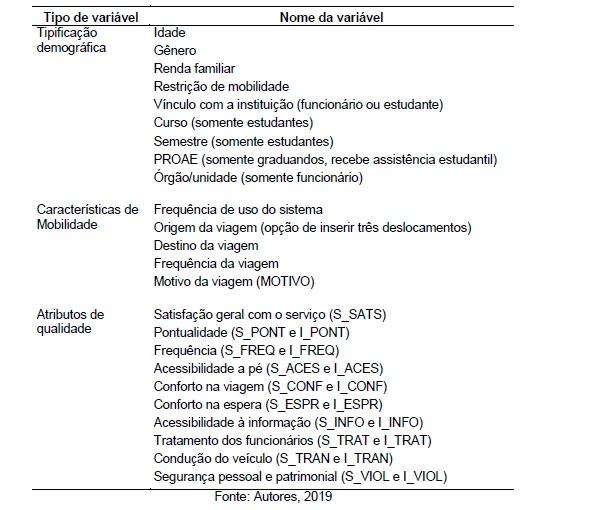

Estimação dos atributos relevantes na satisfação de usuários de transporte intercampi por random forest
knitr::include_graphics("buzufba.jpg")
Introdução
Esta publicação tem como objetivo debater o artigo publicado no IV SER que visou debater os atributos relevantes para a satisfação dos usúarios do Buzufba (transporte intercapi da Universidade Federal da Bahia).
Primeiramente, é interessante perceber algumas questões:
A assiduidade dos usuários ao modal público é diretamente influenciada pela satisfação (qualidade esperada x qualidade percebida) que estes têm ao utilizar o serviço (LAI; CHEN, 2011, FREITAS, 2013).
Qualidade de serviços e satisfação dos clientes são conceitos subjetivos: Intangibilidade; Heterogeneidade e Inseparabilidade
Uma vez que a qualidade é uma construção social (PARASURAMAN; ZEITHAML; BERRY, 1985), a satisfação dos usuários e a importância dada a aspectos do serviço é função de características socioeconômicas como gênero, idade, ocupação, renda, nível educacional e outros (GUIRAO; GARCÍA-PASTOR; LÓPEZ-LAMBAS, 2016).
Nos estudos sobre a qualidade dos serviços, a prática comum é a proposição de questionários ao público. Em tais pesquisas os clientes expressam sua satisfação global e sobre atributos do serviço. Há duas vias principais de estimação da ordem de importância destes atributos: importância declarada e importância derivada. Na primeira, os usuários são convidados a ordenar as características do serviço por importância. É um método mais direto e intuitivo, mas que amplia o tamanho do questionário e, por consequência, o fardo sobre o entrevistado podendo diminuir a precisão e a frequência de resposta da pesquisa. A importância derivada por sua vez estima o valor relativo das categorias mensurando estatisticamente a intensidade do elo entre cada atributo com a medida global de satisfação (GUIRAO; GARCÍA-PASTOR; LÓPEZ-LAMBAS, 2016).
O questionário em questão, porém, apenas inqueriu sobre a avaliação de determinadas variáveis e a satisfação geral dos usuários frente ao serviço de transporte prestado pelo Buzufba.
knitr::include_graphics("tabela.jpg")
Uma formulação diferente para a Random Forest:
Infelizmente, eu não consegui por as equações via latex, mas segue o artigo que fala sobre isto: Classification Trees for Ordinal Responses in R: The rpartScore Package.
Análise Exploratória
Perfil do Usuário

## # A tibble: 4 x 5
## col_name cnt common common_pcnt levels
## <chr> <int> <chr> <dbl> <list>
## 1 FREQ_20172 4 Semanal 37.3 <tibble [4 x 3]>
## 2 RENDA 4 0-3 SM 62.1 <tibble [4 x 3]>
## 3 SEXO 2 F 63.0 <tibble [2 x 3]>
## 4 VINC 5 Grad 88.8 <tibble [5 x 3]>O público que mais respondeu ao questionário e considerado, também, como maiores usuários do BUZUFBA são mulheres na graduação com renda familia inferior a 3 salários minímos e que utilizam o sistema de transporte com alta frequência. Em vias gerais, percebe-se que o BUZUFBA atinge seu público alvo que são, principalmente, alunos de graduação com baixa ou média renda familiar. Deve-se ponderar, também, a questão da violência urbana que é tido como fator fundamental para a escolha deste transporte, ao invés de se percorrer as distâncias a pé.
Deslocamento
Quanto ao trecho que seria percorrido caso o usuário tomasse o caminho a pé para um dos pontos de parada do veículo, têm-se como a moda cerca 200 metros. A maioria dos trechos percorrido pelos alunos para chegar a um dos pontos de parada para pegar um dos Buzufba são curtos, não se destacando como um potencial problema para a maioria dos alunos.
Quanto à distância a pé que seria percorrida, caso não fosse utilizado o Buzufba, observa-se dois padrões. O primeiro padrão versa sobre pequenas caminhadas, inferiores a 1 km de distância, provavelmente, ligadas a questão do desnível que existe entre alguns dos campi, outra questão importante também é a violência urbana que torna este sistema de transporte atrativo mesmo que a distância a ser percorrida seja curta. Quase 70% dos entrevistados em pesquisa de 2010 na UFBA dizem se sentir inseguros no campus, mesmo sob vigilância de câmeras (LEMOS et al., 2011).
Quanto à distância percorrida pelos veículos do Buzufba, têm-se em sua maioria pequenas distâncias, cerca de 3,5 km. Porém, deve-se pontuar que a maioria dos veículos trafega pela Avenida Garibaldi cujo o fluxo é intenso durante os horários de pico.
Por fim, é interessante observar, que se houvesse transportes internos capazes de vencer a questão da diferença de cota entre os campi, poderia ser pensado em sistemas mais inteligentes com rotas menores, tempos de percursos mais rápidos, causando maior sensação de segurança aos usuários e, provavelmente, melhor avaliação por parte dos usuários quanto a qualidade do serviço.


Escala Likert
Escala de Importância
Quanto a questão da importância de cada uma das variáveis, destaca-se aquela dada a frequência dos veículos, a sua pontualidade e o sentimento de segurança pessoal que este promove, fato observado ao se perceber que 98% dos usuários apontam estas variáveis como muito importante. A análise da importância também aponta para a necessidade de se transportar de forma rápida e segura entre diferentes campis ainda que a distância total entre estes seja curta se realizada a pé.

Escala de Satisfação
Quanto a satisfação, destaca-se a avaliação dada quanto a falta de satisfação referente a frequência dos veículos, a confiabilidade do serviço e a qualidade dos pontos de espera, mesmo que o último seja avaliado como pouco importante por parte dos respondentes. É perceptível, desde já, que existe uma discrepância entre a importância dada a frequência e aquela que é oferecida pelo sistema, fato que deve influenciar de forma interessante a avaliação do sistema.

Modelo para encontrar principais fatores intervenientes:
Ajustando os bancos de dados, vamos primeiro cortar as variáveis referentes a distâncias a cada 2 KM (mais sobre isto leia aqui: https://tarssioesa.github.io/distancias_buzufba/).
Definiremos os níveis referentes a nossa variável y (resposta) e x (preditoras):
Criando a partição dos nossos dados (Treino e Teste):
Validação Cruzada:
Optaremos pelo k-folds com k igual a dez. Para mais detalhes é interessante observar o capítulo sobre Validação Cruzada do livro Statistical Learning.
Árvore de Scores:
## CART or Ordinal Responses
##
## 810 samples
## 22 predictor
## 4 classes: '1', '2', '3', '4'
##
## No pre-processing
## Resampling: Cross-Validated (10 fold)
## Summary of sample sizes: 728, 729, 731, 730, 728, 728, ...
## Resampling results across tuning parameters:
##
## cp split prune Accuracy Kappa
## 0.05590062 abs mr 0.9742547 0.9615842
## 0.05590062 abs mc 0.9667231 0.9502725
## 0.05590062 quad mr 0.9742547 0.9615842
## 0.05590062 quad mc 0.9667231 0.9502725
## 0.43478261 abs mr 0.8357890 0.7392770
## 0.43478261 abs mc 0.9667231 0.9502725
## 0.43478261 quad mr 0.9667231 0.9502725
## 0.43478261 quad mc 0.9667231 0.9502725
## 0.50931677 abs mr 0.4629789 0.1052632
## 0.50931677 abs mc 0.4037196 0.0000000
## 0.50931677 quad mr 0.4037196 0.0000000
## 0.50931677 quad mc 0.4037196 0.0000000
##
## Accuracy was used to select the optimal model using the largest value.
## The final values used for the model were cp = 0.05590062, split = abs
## and prune = mr.Dados os parâmetros da nossa Random Forest baseada em scores ordinários, podemos inferir sobre quais são as variáveis mais importantes para representar a satisfação dos alunos perante o serviço prestado pelo BUZUFBA:

Muitos alunos precisam se locomover entre os campi da UFBA rapidamente para estar presente nas aulas, por isto a pontualidade e a frequência dos veículos se destacam claramente frente às outras variáveis.
Em segunda instância, aparecem variáveis ligadas a gestão do serviço, nestas estão inclusas a disponibilidade de informação acerca do serviço.
Verificação do modelo criado:
## Confusion Matrix and Statistics
##
## Reference
## Prediction 1 2 3 4
## 1 122 0 0 0
## 2 0 127 0 0
## 3 0 0 85 11
## 4 0 0 0 0
##
## Overall Statistics
##
## Accuracy : 0.9681
## 95% CI : (0.9437, 0.984)
## No Information Rate : 0.3681
## P-Value [Acc > NIR] : < 2.2e-16
##
## Kappa : 0.9525
##
## Mcnemar's Test P-Value : NA
##
## Statistics by Class:
##
## Class: 1 Class: 2 Class: 3 Class: 4
## Sensitivity 1.0000 1.0000 1.0000 0.00000
## Specificity 1.0000 1.0000 0.9577 1.00000
## Pos Pred Value 1.0000 1.0000 0.8854 NaN
## Neg Pred Value 1.0000 1.0000 1.0000 0.96812
## Prevalence 0.3536 0.3681 0.2464 0.03188
## Detection Rate 0.3536 0.3681 0.2464 0.00000
## Detection Prevalence 0.3536 0.3681 0.2783 0.00000
## Balanced Accuracy 1.0000 1.0000 0.9788 0.50000Temos, por fim, um modelo com boa precisão, a despeito de não conseguir aprender a cerca dos resultados que levam os alunos a se sentirem satisfeito no nível 4 (principalmente pelo baixo número de respondentes). Porém, o modelo representa bem as respostas dadas pelos alunos mais insatisfeitos sugerindo, assim, as principais queixas realizadas pelos alunos respondentes deste questionário.